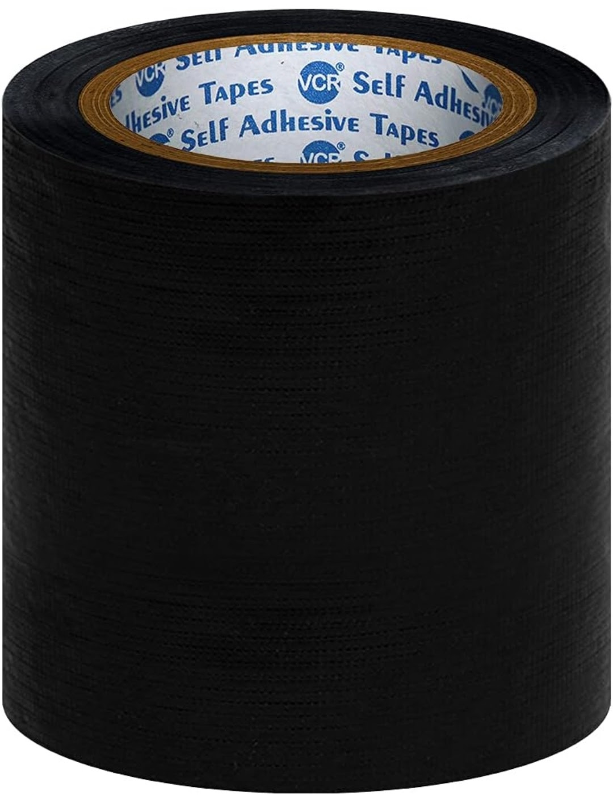
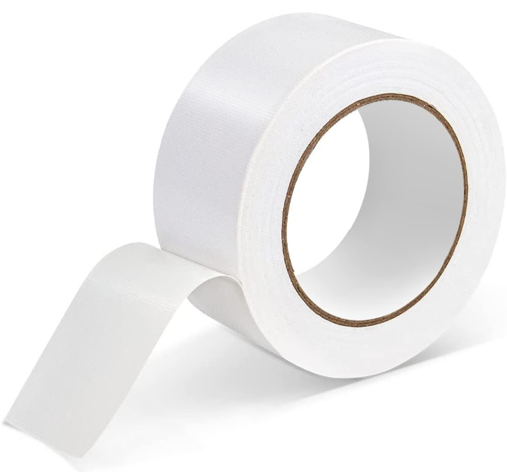
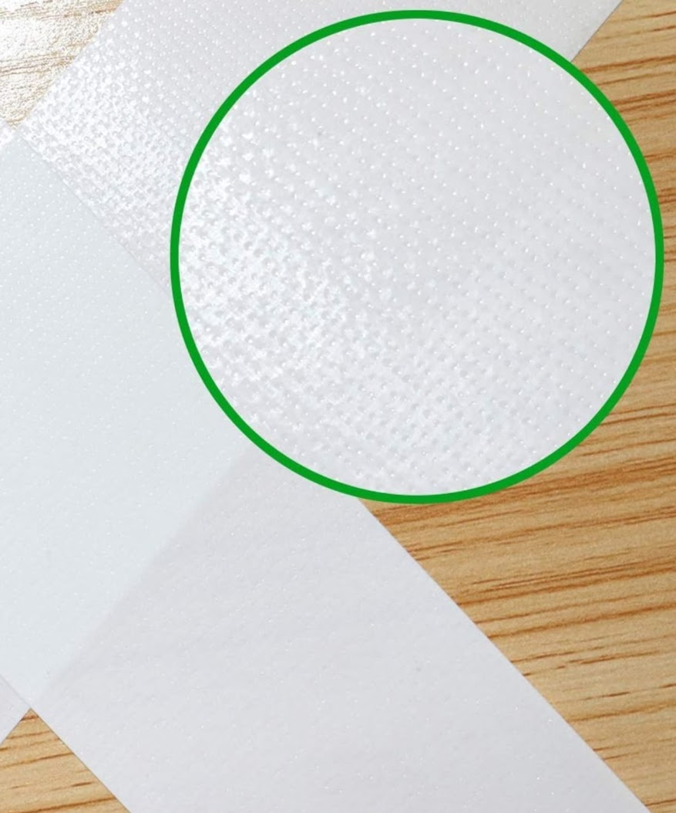

Strong adhesive repair tape designed for quick fixing of damaged tarpaulins, covers, and plastic sheets without stitching.




Tarpaulin Repair Tape is a pressure-sensitive adhesive tape specially developed to repair cuts, tears, and punctures in tarpaulins and plastic covers.
It provides a fast, economical, and durable repair solution without the need for stitching or heat welding, helping extend the usable life of tarpaulins in field conditions.
For Indian operating conditions, tarpaulin repair tape should be applied on clean and dry surfaces for best adhesion. Wider tapes are recommended for larger tears and high-wind exposure areas. Press firmly to ensure complete bonding, especially during monsoon use.